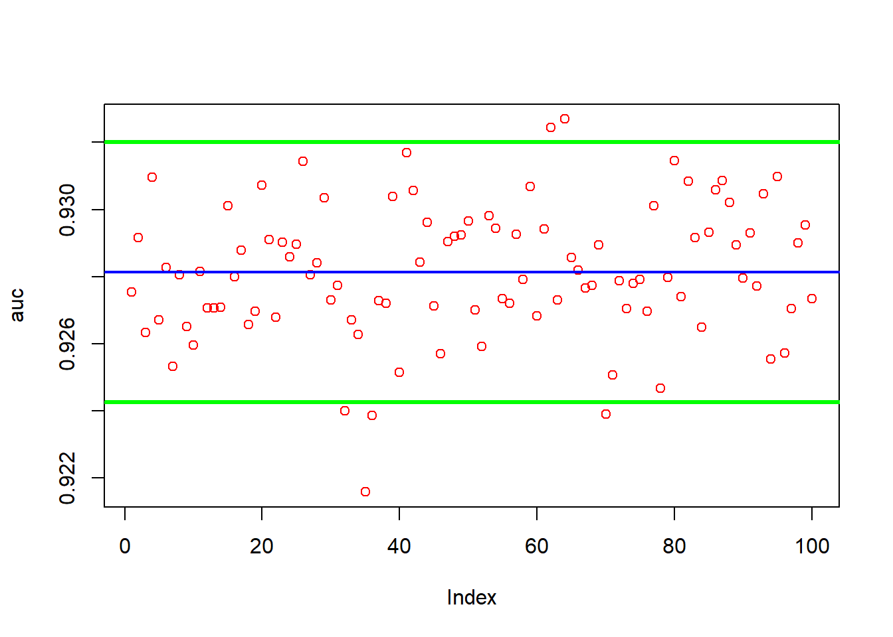
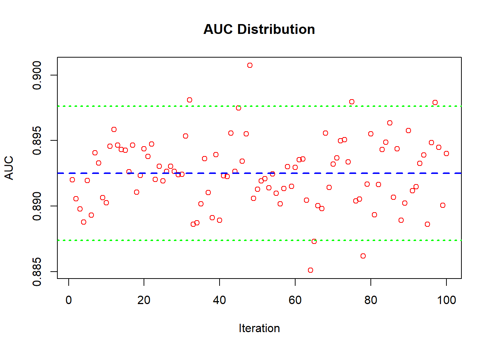

Chapter 3 Binary Application
I will compare results in a different data set that predicts if income is over 50k (1) or not (0)
suppressMessages(library(readr))
suppressMessages(library(caret))
suppressMessages(library(ROCR))
suppressMessages(library(xgboost))
suppressMessages(library(foreach))
suppressMessages(library(doParallel))
suppressMessages(library(Matrix))
suppressMessages(library(dplyr))
suppressMessages(library(tidyverse))
suppressMessages(library(forcats))
suppressMessages(library(DataExplorer))
suppressMessages(library(randomForest))First, we import all necessary libraries for data manipulation, visualization, and machine learning.
3.1 Data
3.1.1 Data Prep
## Rows: 32561 Columns: 15
## ── Column specification ─────────────────────────────────────────
## Delimiter: ","
## chr (9): X2, X4, X6, X7, X8, X9, X10, X14, X15
## dbl (6): X1, X3, X5, X11, X12, X13
##
## ℹ Use `spec()` to retrieve the full column specification for this data.
## ℹ Specify the column types or set `show_col_types = FALSE` to quiet this message.colnames(data) <- c("age", "workclass", "fnlwgt", "education", "education_num", "marital_status", "occupation", "relationship", "race", "sex", "capital_gain", "capital_loss", "hours_per_week", "native_country", "income")
glimpse(data)## Rows: 32,561
## Columns: 15
## $ age <dbl> 39, 50, 38, 53, 28, 37, 49, 52, 31, 42, 37, 30, 23, 32,…
## $ workclass <chr> "State-gov", "Self-emp-not-inc", "Private", "Private", …
## $ fnlwgt <dbl> 77516, 83311, 215646, 234721, 338409, 284582, 160187, 2…
## $ education <chr> "Bachelors", "Bachelors", "HS-grad", "11th", "Bachelors…
## $ education_num <dbl> 13, 13, 9, 7, 13, 14, 5, 9, 14, 13, 10, 13, 13, 12, 11,…
## $ marital_status <chr> "Never-married", "Married-civ-spouse", "Divorced", "Mar…
## $ occupation <chr> "Adm-clerical", "Exec-managerial", "Handlers-cleaners",…
## $ relationship <chr> "Not-in-family", "Husband", "Not-in-family", "Husband",…
## $ race <chr> "White", "White", "White", "Black", "Black", "White", "…
## $ sex <chr> "Male", "Male", "Male", "Male", "Female", "Female", "Fe…
## $ capital_gain <dbl> 2174, 0, 0, 0, 0, 0, 0, 0, 14084, 5178, 0, 0, 0, 0, 0, …
## $ capital_loss <dbl> 0, 0, 0, 0, 0, 0, 0, 0, 0, 0, 0, 0, 0, 0, 0, 0, 0, 0, 0…
## $ hours_per_week <dbl> 40, 13, 40, 40, 40, 40, 16, 45, 50, 40, 80, 40, 30, 50,…
## $ native_country <chr> "United-States", "United-States", "United-States", "Uni…
## $ income <chr> "<=50K", "<=50K", "<=50K", "<=50K", "<=50K", "<=50K", "…##
## <=50K >50K
## 24720 7841Identify columns containing “?” and count their occurrence. Then, transform character columns to factors and adjust the ‘income’ column for binary classification.
question_mark_counts_dplyr <- data %>%
summarise(across(everything(), ~sum(. == "?", na.rm = TRUE))) %>%
select(where(~. > 0))
question_mark_counts_dplyr## # A tibble: 1 × 3
## workclass occupation native_country
## <int> <int> <int>
## 1 1836 1843 583data_transformed <- data %>%
mutate(across(where(is.character), as.factor)) %>%
mutate(income_binary = if_else(income == ">50K", 1, 0)) %>%
select(-income) %>%
select(income_binary, everything())
df <- rename(data_transformed, y = income_binary)
df$native_country <- fct_lump(df$native_country, n = 3, other_level = "other")sapply(df, function(col) {
if(is.factor(col)) {
sorted_tab <- sort(table(col))
return(sorted_tab)
}
})## $y
## NULL
##
## $age
## NULL
##
## $workclass
## col
## Never-worked Without-pay Federal-gov Self-emp-inc
## 7 14 960 1116
## State-gov ? Local-gov Self-emp-not-inc
## 1298 1836 2093 2541
## Private
## 22696
##
## $fnlwgt
## NULL
##
## $education
## col
## Preschool 1st-4th 5th-6th Doctorate 12th 9th
## 51 168 333 413 433 514
## Prof-school 7th-8th 10th Assoc-acdm 11th Assoc-voc
## 576 646 933 1067 1175 1382
## Masters Bachelors Some-college HS-grad
## 1723 5355 7291 10501
##
## $education_num
## NULL
##
## $marital_status
## col
## Married-AF-spouse Married-spouse-absent Widowed
## 23 418 993
## Separated Divorced Never-married
## 1025 4443 10683
## Married-civ-spouse
## 14976
##
## $occupation
## col
## Armed-Forces Priv-house-serv Protective-serv Tech-support
## 9 149 649 928
## Farming-fishing Handlers-cleaners Transport-moving ?
## 994 1370 1597 1843
## Machine-op-inspct Other-service Sales Adm-clerical
## 2002 3295 3650 3770
## Exec-managerial Craft-repair Prof-specialty
## 4066 4099 4140
##
## $relationship
## col
## Other-relative Wife Unmarried Own-child Not-in-family
## 981 1568 3446 5068 8305
## Husband
## 13193
##
## $race
## col
## Other Amer-Indian-Eskimo Asian-Pac-Islander Black
## 271 311 1039 3124
## White
## 27816
##
## $sex
## col
## Female Male
## 10771 21790
##
## $capital_gain
## NULL
##
## $capital_loss
## NULL
##
## $hours_per_week
## NULL
##
## $native_country
## col
## ? Mexico other United-States
## 583 643 2165 29170Combine some levels
df$education <- as.factor(ifelse(df$education %in% c("Preschool", "1st-4th"), "Early Childhood", as.character(df$education)))
df$workclass <- as.factor(ifelse(df$workclass %in% c("Never-worked", "Without-pay"), "Unemployed", as.character(df$workclass)))
df$marital_status <- as.factor(ifelse(df$marital_status == "Married-AF-spouse", "Married-spouse-absent", as.character(df$marital_status)))
df$occupation <- as.factor(ifelse(df$occupation == "Armed-Forces", "Protective-serv", as.character(df$occupation)))## Rows: 32,561
## Columns: 15
## $ y <dbl> 0, 0, 0, 0, 0, 0, 0, 1, 1, 1, 1, 1, 0, 0, 1, 0, 0, 0, 0…
## $ age <dbl> 39, 50, 38, 53, 28, 37, 49, 52, 31, 42, 37, 30, 23, 32,…
## $ workclass <fct> State-gov, Self-emp-not-inc, Private, Private, Private,…
## $ fnlwgt <dbl> 77516, 83311, 215646, 234721, 338409, 284582, 160187, 2…
## $ education <fct> Bachelors, Bachelors, HS-grad, 11th, Bachelors, Masters…
## $ education_num <dbl> 13, 13, 9, 7, 13, 14, 5, 9, 14, 13, 10, 13, 13, 12, 11,…
## $ marital_status <fct> Never-married, Married-civ-spouse, Divorced, Married-ci…
## $ occupation <fct> Adm-clerical, Exec-managerial, Handlers-cleaners, Handl…
## $ relationship <fct> Not-in-family, Husband, Not-in-family, Husband, Wife, W…
## $ race <fct> White, White, White, Black, Black, White, Black, White,…
## $ sex <fct> Male, Male, Male, Male, Female, Female, Female, Male, F…
## $ capital_gain <dbl> 2174, 0, 0, 0, 0, 0, 0, 0, 14084, 5178, 0, 0, 0, 0, 0, …
## $ capital_loss <dbl> 0, 0, 0, 0, 0, 0, 0, 0, 0, 0, 0, 0, 0, 0, 0, 0, 0, 0, 0…
## $ hours_per_week <dbl> 40, 13, 40, 40, 40, 40, 16, 45, 50, 40, 80, 40, 30, 50,…
## $ native_country <fct> United-States, United-States, United-States, United-Sta…df_numeric <- df %>% select(where(is.numeric))
df_factor <- df %>% select(where(is.factor))
plot_correlation(df_numeric)numeric_columns <- sapply(df, is.numeric) & names(df) != "y"
dfs <- df
dfs[numeric_columns] <- scale(df[numeric_columns])
head(dfs)## # A tibble: 6 × 15
## y age workclass fnlwgt education education_num marital_status
## <dbl> <dbl> <fct> <dbl> <fct> <dbl> <fct>
## 1 0 0.0307 State-gov -1.06 Bachelors 1.13 Never-married
## 2 0 0.837 Self-emp-not-inc -1.01 Bachelors 1.13 Married-civ-spo…
## 3 0 -0.0426 Private 0.245 HS-grad -0.420 Divorced
## 4 0 1.06 Private 0.426 11th -1.20 Married-civ-spo…
## 5 0 -0.776 Private 1.41 Bachelors 1.13 Married-civ-spo…
## 6 0 -0.116 Private 0.898 Masters 1.52 Married-civ-spo…
## # ℹ 8 more variables: occupation <fct>, relationship <fct>, race <fct>,
## # sex <fct>, capital_gain <dbl>, capital_loss <dbl>, hours_per_week <dbl>,
## # native_country <fct>3.2 Model Selection
3.2.1 Functions
run_xgb <- function(xs, y, grd, v) {
# Setup parallel computing
nc <- detectCores() - 1
cl <- makeCluster(nc)
registerDoParallel(cl)
results <- foreach(g = 1:nrow(grd), .combine='rbind', .packages=c('xgboost', 'ROCR')) %dopar% {
auc <- numeric(v) # AUC scores for validations
for (k in 1:v) {
# Bootstrap sampling for validation
idx <- unique(sample(nrow(xs), nrow(xs), replace = TRUE))
tr_x <- xs[idx, ]
tr_y <- y[idx]
vl_x <- xs[-idx, ]
vl_y <- y[-idx]
# Model training for validation
prms <- list(
booster = "gbtree",
objective = "binary:logistic",
max_depth = grd[g, "max_depth"],
eta = grd[g, "eta"],
subsample = grd[g, "subsample"],
colsample_bytree = grd[g, "colsample_bytree"],
gamma = grd[g, "gamma"],
min_child_weight = grd[g, "min_child_weight"],
alpha = grd[g, "alpha"],
lambda = grd[g, "lambda"]
)
xgb_tr <- xgb.DMatrix(data = tr_x, label = tr_y)
xm <- xgb.train(params = prms, data = xgb_tr, nrounds = grd[g, "nrounds"], verbose = FALSE, nthread = 1)
# AUC calculation for validation
phat <- predict(xm, xgb.DMatrix(data = vl_x))
pred <- prediction(phat, vl_y)
auc[k] <- performance(pred, "auc")@y.values[[1]]
}
# AUC mean and params
auc_mean <- mean(auc)
c(grd[g, ], auc_mean)
}
# Stop the cluster
stopCluster(cl)
# Convert results to a tibble and set column names
res <- as_tibble(results)
names(res) <- c(names(grd), "AUC_Mean")
res <- res %>%
mutate(across(everything(), ~unlist(.)))
return(res)
}test_top_hp <- function(hp, xs, y, t) {
# Setup parallel computing
nc <- detectCores() - 1
cl <- makeCluster(nc)
registerDoParallel(cl)
# Testing loop
ts_res <- foreach(h = 1:nrow(hp), .combine = 'rbind', .packages = c('xgboost', 'ROCR')) %dopar% {
aucs <- numeric(t)
for (i in 1:t) {
# Bootstrap sampling for testing
idx <- unique(sample(nrow(xs), nrow(xs), replace = TRUE))
mdx <- xs[idx, ]
mdy <- y[idx]
tx <- xs[-idx, ]
ty <- y[-idx]
# Parameters for the model
prms <- list(
booster = "gbtree",
objective = "binary:logistic",
max_depth = hp[h, "max_depth"],
eta = hp[h, "eta"],
subsample = hp[h, "subsample"],
colsample_bytree = hp[h, "colsample_bytree"],
gamma = hp[h, "gamma"],
min_child_weight = hp[h, "min_child_weight"],
alpha = hp[h, "alpha"],
lambda = hp[h, "lambda"],
nrounds = hp[h, "nrounds"]
)
# Train and test the model
dtr <- xgb.DMatrix(data = mdx, label = mdy)
dte <- xgb.DMatrix(data = tx, label = ty)
mdl <- xgb.train(params = prms, data = dtr, nrounds = prms$nrounds, verbose = 0, nthread = 1)
# AUC calculation
ph <- predict(mdl, dte)
pr <- prediction(ph, ty)
aucs[i] <- performance(pr, "auc")@y.values[[1]]
}
# Average AUC and combine with hyperparameters
c(hp[h, ], mean_auc = mean(aucs))
}
# Stop the cluster
stopCluster(cl)
# Convert to tibble and unlist columns
ts_tbl <- as_tibble(ts_res) %>% mutate(across(everything(), ~unlist(.)))
return(ts_tbl)
}test_auc <- function(xs, y, best_hp, runs) {
aucs <- numeric(runs)
for (i in 1:runs) {
# Bootstrap sampling for testing
idx <- unique(sample(nrow(xs), nrow(xs), replace = TRUE))
md_x <- xs[idx, ]
md_y <- y[idx]
test_x <- xs[-idx, ]
test_y <- y[-idx]
# Set parameters for the model
params <- list(
booster = "gbtree",
objective = "binary:logistic",
max_depth = best_hp$max_depth,
eta = best_hp$eta,
subsample = best_hp$subsample,
colsample_bytree = best_hp$colsample_bytree,
gamma = best_hp$gamma,
min_child_weight = best_hp$min_child_weight,
alpha = best_hp$alpha,
lambda = best_hp$lambda
)
# Train and test the model
md <- xgb.DMatrix(data = md_x, label = md_y)
dtest <- xgb.DMatrix(data = test_x, label = test_y)
model <- xgb.train(params = params, data = md, nrounds = best_hp$nrounds, verbose = 0, nthread = 1)
# Calculate AUC
phat <- predict(model, dtest)
pred <- prediction(phat, test_y)
aucs[i] <- performance(pred, "auc")@y.values[[1]]
}
return(aucs)
}opt_nrd4eta <- function(xs, y, params, o , grd) {
# Assuming xgb.train and related functions are already available (via library(xgboost))
library(xgboost)
library(ROCR)
# Detect the number of cores
numCores <- detectCores() - 1
# Initialize an AUC matrix
aucm <- matrix(0, nrow = o, ncol = length(grd))
start_time <- Sys.time()
for (j in 1:o){
# Creating a bootstrap sample
ind <- unique(sample(nrow(xs), nrow(xs), replace = TRUE))
dm <- xgb.DMatrix(data = xs[ind, ], label = y[ind])
dv <- xgb.DMatrix(data = xs[-ind, ], label = y[-ind])
auc <- c()
for (i in 1:length(grd)){
# Training the model on the bootstrap sample
bsm <- xgb.train(params = params,
data = dm,
nrounds = grd[i],
verbose = FALSE,
nthread = numCores
)
# Predict on the validation set and calculate AUC
phat <- predict(bsm, dv, type = "prob")
# Calculating the AUC
pred_rocr <- prediction(phat, y[-ind])
auc_ROCR <- performance(pred_rocr, measure = "auc")
auc[i] <- auc_ROCR@y.values[[1]]
}
aucm[j, ] <- auc
}
evalauc <- colMeans(aucm)
# Plotting
plot(grd, evalauc, type = "b", col = "blue",
xlab = "Number of Rounds", ylab = "AUC",
main = "AUC over o rounds vs Number of Rounds in XGBoost")
best_nrounds <- grd[which.max(evalauc)]
max_auc <- max(evalauc)
end_time <- Sys.time()
elapsed_time <- end_time - start_time
return(list(best_nrounds = best_nrounds, max_auc = max_auc, elapsed_time = elapsed_time))
}3.2.2 XGB
# Define XGBoost parameters
params <- list(
booster = "gbtree",
objective = "binary:logistic",
eta = 0.05
)
grd <- seq(1, 500, by = 50)
o <- 5
rs <- opt_nrd4eta(xs = xs, y = y, params = params, o, grd)This is a very small grid and cuts out alot of tuning power
grid <- expand.grid(
eta = seq(0.03, 0.05, by = 0.02),
max_depth = seq(4, 6, by = 2),
min_child_weight = seq(1, 1, by = 0),
subsample = seq(1, 1, by = 0),
colsample_bytree = seq(1, 1, by = 0),
lambda = seq(1, 3, by = 1),
alpha = seq(0, 1, by = 1),
gamma = seq(0, 1, by = 1),
nrounds = seq(350, 450, by = 50)
)conf_lev <- .95
num_max <- 5
n <- log(1-conf_lev)/log(1-num_max/nrow(grid))
ind <- sample(nrow(grid), nrow(grid)*(n/nrow(grid)), replace = FALSE)
rgrid <- grid[ind, ]v <- 5 #This number should be much higher
vr <- run_xgb(xs, y, rgrid, v)
print(head(vr), width = Inf)## # A tibble: 6 × 10
## eta max_depth min_child_weight subsample colsample_bytree lambda alpha gamma
## <dbl> <dbl> <dbl> <dbl> <dbl> <dbl> <dbl> <dbl>
## 1 0.05 4 1 1 1 3 0 0
## 2 0.05 6 1 1 1 1 0 1
## 3 0.05 6 1 1 1 2 0 0
## 4 0.03 4 1 1 1 2 1 0
## 5 0.03 4 1 1 1 3 1 1
## 6 0.03 4 1 1 1 1 0 1
## nrounds AUC_Mean
## <dbl> <dbl>
## 1 350 0.928
## 2 350 0.926
## 3 400 0.928
## 4 400 0.925
## 5 450 0.925
## 6 350 0.924We will take the top 10% and do a more thorough search
# Sort vr by AUC_Mean and select the top 25%
top_hp <- vr %>%
arrange(desc(AUC_Mean)) %>%
slice_head(prop = 0.05)## # A tibble: 4 × 11
## eta max_depth min_child_weight subsample colsample_bytree lambda alpha gamma
## <dbl> <dbl> <dbl> <dbl> <dbl> <dbl> <dbl> <dbl>
## 1 0.03 6 1 1 1 1 0 0
## 2 0.05 6 1 1 1 3 0 0
## 3 0.03 6 1 1 1 1 0 1
## 4 0.03 6 1 1 1 3 0 0
## nrounds AUC_Mean mean_auc
## <dbl> <dbl> <dbl>
## 1 400 0.930 0.928
## 2 450 0.929 0.928
## 3 400 0.929 0.928
## 4 450 0.929 0.928Final AUC pres
best_hp <- ts_res %>%
dplyr::arrange(desc(mean_auc)) %>%
dplyr::slice(1)
print(best_hp, width = Inf)## # A tibble: 1 × 11
## eta max_depth min_child_weight subsample colsample_bytree lambda alpha gamma
## <dbl> <dbl> <dbl> <dbl> <dbl> <dbl> <dbl> <dbl>
## 1 0.05 6 1 1 1 3 0 0
## nrounds AUC_Mean mean_auc
## <dbl> <dbl> <dbl>
## 1 450 0.929 0.928## [1] 0.9279972## [1] 0.002080296plot(auc, col="red")
abline(a = mean(auc), b = 0, col = "blue", lwd = 2)
abline(a = mean(auc)-1.96*sd(auc), b = 0, col = "green", lwd = 3)
abline(a = mean(auc)+1.96*sd(auc), b = 0, col = "green", lwd = 3)
3.3 Comparisions
Random Forest
rfd <- dfs
rfd$y <- as.factor(rfd$y)
B <- 120
n <- 100
obs <- nrow(data)
numCores <- detectCores()-1
cl <- makeCluster(numCores)
registerDoParallel(cl)
lst <- foreach(i=1:n, .packages = c("randomForest", "ROCR")) %dopar% {
tryCatch({
idx <- unique(sample(obs, obs, replace = TRUE))
train <- rfd[idx,]
test <- rfd[-idx, ]
model <- randomForest(y ~ ., ntree = B, data = train)
phat <- predict(model, test, type = "prob")
pred_rocr <- prediction(phat[,2], test$y)
auc_ROCR <- performance(pred_rocr, measure = "auc")
auc_ROCR@y.values[[1]]
}, error = function(e) {
NA # Return NA on error
})
}
stopCluster(cl)
# combine the results
auc <- unlist(lst)
auc <- na.omit(auc)
# plot auc and mean
plot(auc, col="red")
abline(a = mean(auc), b = 0, col = "blue", lwd = 2)
abline(a = mean(auc)-1.96*sd(auc), b = 0, col = "green", lwd = 3)
abline(a = mean(auc)+1.96*sd(auc), b = 0, col = "green", lwd = 3)
LPM
data_lm <- rfd
data_lm$y <- as.numeric(data_lm$y)
data_lm$y <- data_lm$y - 1 # bring it back to 1 and 0sn <- 100
obs <- nrow(data_lm)
numCores <- detectCores() - 1
cl <- makeCluster(numCores)
registerDoParallel(cl)
auc_list <- foreach(i = 1:n, .packages = "ROCR") %dopar% {
tryCatch({
idx <- unique(sample(obs, obs, replace = TRUE))
trn <- data_lm[idx, ] # Training data
tst <- data_lm[-idx, ] # Test data
mdl <- lm(y ~ ., data = trn)
phat <- predict(mdl, tst)
pred <- prediction(phat, tst$y)
performance(pred, "auc")@y.values[[1]]
}, error = function(e) {
NA # Return NA on error
})
}
stopCluster(cl)
# Process the AUC results
auc_values <- unlist(auc_list)
auc_values <- na.omit(auc_values)
mean_auc <- mean(auc_values)
sd_auc <- sd(auc_values)
# Plot AUC values, mean, and confidence intervals
plot(auc_values, col = "red", main = "AUC Distribution", xlab = "Iteration", ylab = "AUC")
abline(h = mean_auc, col = "blue", lwd = 2, lty = 2) # Mean line
abline(h = mean_auc - 1.96 * sd_auc, col = "green", lwd = 2, lty = 3) # Lower CI
abline(h = mean_auc + 1.96 * sd_auc, col = "green", lwd = 2, lty = 3) # Upper CI
3.4 Statistic selection
We are going to use jstat but you can pick another confusion table metric if you want
r <- 100
best_thresholds <- c()
j_stats <- c()
for(i in 1:r) {
# Bootstrap sampling
ind <- sample(nrow(xs), size = nrow(xs), replace = TRUE)
train_xs <- xs[ind, ]
test_xs <- xs[-ind, ]
train_y <- y[ind]
test_y <- y[-ind]
# Create DMatrix objects
dtrain <- xgb.DMatrix(data = train_xs, label = train_y)
dtest <- xgb.DMatrix(data = test_xs, label = test_y)
# Extract parameters for the model from best_hp
params <- list(
booster = "gbtree",
objective = "binary:logistic",
eta = best_hp$eta,
max_depth = best_hp$max_depth,
subsample = best_hp$subsample,
colsample_bytree = best_hp$colsample_bytree,
min_child_weight = best_hp$min_child_weight,
gamma = best_hp$gamma,
alpha = best_hp$alpha,
lambda = best_hp$lambda
)
# Train the model
xgbmdl <- xgb.train(params = params, data = dtrain, nrounds = best_hp$nrounds, verbose = 0)
# Predictions
phat <- predict(xgbmdl, dtest)
# ROCR predictions object
pred <- prediction(phat, test_y)
# Calculate performance measures
perf <- performance(pred, measure = "sens", x.measure = "spec")
sensitivity <- slot(perf, "y.values")[[1]]
specificity <- slot(perf, "x.values")[[1]]
thresholds <- slot(perf, "alpha.values")[[1]]
j_stat <- sensitivity + specificity - 1
# Find the best threshold (maximizing J statistic)
best_idx <- which.max(j_stat)
best_thresholds[i] <- thresholds[best_idx]
j_stats[i] <- j_stat[best_idx]
}
# Calculate and print the average of the best thresholds
avg_best_threshold <- mean(best_thresholds)
cat("Average Best Threshold:", avg_best_threshold, "\n")## Average Best Threshold: 0.2219607# Plot the distribution of max J statistics for each iteration
hist(j_stats, col = "blue", xlab = "Max J Statistic", ylab = "Frequency",
main = "Distribution of Max J Statistics Across Bootstrap Iterations")
abline(v = mean(j_stats), col = "red", lwd = 2) # Mean J Stat line
3.5 Confusion table and ROC
Avg confusion table. we should do a CI later
# Initialize storage for aggregated confusion matrix totals
conf_mat_totals <- matrix(0, nrow = 2, ncol = 2)
colnames(conf_mat_totals) <- c("Actual_1", "Actual_0")
rownames(conf_mat_totals) <- c("Predicted_1", "Predicted_0")
# Initialize lists to store TPR and FPR values for each bootstrap iteration
all_tpr <- list()
all_fpr <- list()
for(i in 1:100) {
ind <- sample(nrow(xs), size = nrow(xs), replace = TRUE)
train_xs <- xs[ind, ]
test_xs <- xs[-ind, ]
train_y <- y[ind]
test_y <- y[-ind]
dtrain <- xgb.DMatrix(data = train_xs, label = train_y)
dtest <- xgb.DMatrix(data = test_xs, label = test_y)
xgbmdl_final <- xgb.train(params = params, data = dtrain, nrounds = best_hp$nrounds, verbose = 0)
final_phat <- predict(xgbmdl_final, dtest)
final_predicted_classes <- ifelse(final_phat > avg_best_threshold, 1, 0)
final_test_y_binary <- ifelse(test_y > avg_best_threshold, 1, 0)
conf_matrix <- table(Predicted = factor(final_predicted_classes, levels = c(1, 0)), Actual = factor(final_test_y_binary, levels = c(1, 0)))
conf_mat_totals <- conf_mat_totals + as.matrix(conf_matrix)
final_pred_rocr <- prediction(final_phat, test_y)
final_perf_rocr <- performance(final_pred_rocr, "tpr", "fpr")
# Store TPR and FPR values for this iteration
all_tpr[[i]] <- final_perf_rocr@y.values[[1]]
all_fpr[[i]] <- final_perf_rocr@x.values[[1]]
}
# Calculate the average confusion matrix
avg_conf_matrix <- conf_mat_totals / 100
print(avg_conf_matrix)## Actual_1 Actual_0
## Predicted_1 2515.76 1699.07
## Predicted_0 363.59 7402.17This doesn’t have a CI but its a average
# Determine common FPR thresholds for interpolation (simplified approach)
common_fpr_thresholds <- seq(0, 1, length.out = 100)
# Initialize vectors to hold averaged TPR values for these common thresholds
averaged_tpr <- numeric(length(common_fpr_thresholds))
# Interpolate TPR values at common FPR thresholds for each bootstrap iteration and average them
for (i in seq_along(common_fpr_thresholds)) {
tpr_values_at_threshold <- sapply(seq_along(all_tpr), function(j) {
approx(all_fpr[[j]], all_tpr[[j]], xout = common_fpr_thresholds[i])$y
})
averaged_tpr[i] <- mean(tpr_values_at_threshold, na.rm = TRUE)
}
# Plot the averaged ROC curve
plot(common_fpr_thresholds, averaged_tpr, type = 'l', col = 'blue', xlab = 'False Positive Rate', ylab = 'True Positive Rate', main = 'Averaged ROC Curve across Bootstrap Samples')
abline(a = 0, b = 1, lty = 2, col = 'red') # Reference lineMassive notes
I want to acknowledge that j statistic is not be the best idea in this case. I used it so we can see our confusion table and then adjust in the future to what statistic we may desire. We should try f statistic due to the imbalance